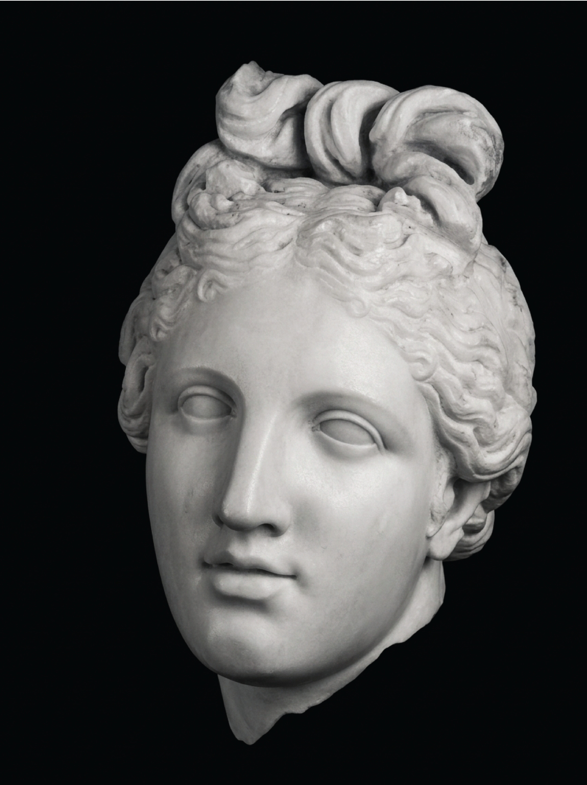

The Object
The Venus Pudica from Scupi is a monumental marble statue of Venus or Aphrodite discovered in July 2008 in the remains of the city's large thermal complex. Scupi was the Roman-era city of Colonia Flavia Scupinorum, located on the outskirts of present-day Skopje.
The sculpture represents a nude female figure standing in contrapposto. Her weight falls primarily on the left leg, while the arms cross the body in the characteristic pudica gesture, simultaneously revealing and concealing the nude. A dolphin stands vertically beside the left leg.
Macedonian archaeological cataloguing identifies the sculpture as being carved from fine-grained white Parian marble. Its monumental scale and highly finished carving distinguish it from the small Venus statuettes and fragments more commonly encountered in Roman provincial contexts.
The sculpture is generally dated to the second century CE. Some secondary sources have proposed a third-century date, but the second-century dating is the stronger formulation for publication based on the archaeological and art-historical material currently available.
The figure belongs to the long classical tradition of the monumental female nude. The weight-bearing left leg establishes the principal axis of the figure, while the relaxed opposite leg produces a shift through the hips and torso characteristic of contrapposto. The arms introduce a contrasting movement across the body, creating a composition in which the figure's physical balance and gesture work together.
The arms are particularly important. They cross the nude body in the conventional pudica gesture, covering portions of the breasts and pubic region. The gesture does not simply conceal the body. By drawing attention to the areas being covered, it simultaneously emphasizes the nude. This tension between exposure and concealment is fundamental to the pudica type.
The Pudica Tradition
The term pudica does not identify a single statue or a single ancient composition. It describes an iconographic family in which a nude female figure covers the breasts, the pubic area, or both.
The convention developed through the changing representation of the female nude in late Classical and Hellenistic sculpture. The gesture became one of the most recognizable ways in which Aphrodite or Venus could be represented as a nude figure.
The most important point of departure for the history of the female nude is the Aphrodite of Knidos by Praxiteles, created in the fourth century BCE. The original sculpture is lost, but its influence was extensive. The Knidian Aphrodite established the nude female deity as a major subject of monumental Greek sculpture and became one of the most frequently reproduced and reinterpreted images of antiquity.
Later sculptors did not simply reproduce the original figure mechanically. They developed new versions of the nude, changing the pose, proportions, gestures and relationship between the figure and its attributes. The pudica tradition belongs to this history of transformation.
The Scupi Venus should therefore not be described as a copy of Praxiteles' Aphrodite of Knidos. Praxiteles represents an important ancestral point in the development of the type, while the Scupi sculpture is a Roman Imperial work that belongs to a later and continually modified sculptural tradition.
The word pudica describes a visual convention rather than a statement about the figure's personality or character. The sculpture creates modesty through the act of covering while simultaneously presenting the nude body to view.
The Dolphin and the Marble
The dolphin beside the figure's left leg has both iconographic and structural significance. As an attribute of Venus, the dolphin evokes the goddess's connection with the sea and her marine birth. Dolphins and other marine creatures appear in representations of Venus throughout ancient sculpture.
The dolphin also performs a practical function. Monumental marble figures are structurally vulnerable at narrow points such as the ankles and lower legs. Sculptors therefore incorporated additional elements into the composition to reinforce these areas. Dolphins, drapery, tree trunks, Erotes and vessels could function simultaneously as visual motifs and structural supports.
The dolphin at Scupi should be understood in this dual capacity. It contributes to the identification of the goddess while also helping to support the marble figure. Its presence acquires an additional visual resonance because the sculpture was found in a thermal complex organized around water. That relationship is suggestive, but the dolphin should not be treated as evidence of a uniquely local or Macedonian symbolism. Its association with Venus is already well established within the broader sculptural tradition.
The sculpture is identified in Macedonian cataloguing as being carved from Parian marble. Paros was one of the major sources of highly valued sculptural marble in the ancient Mediterranean. Fine-grained marble was particularly suited to the representation of the human body, allowing sculptors to produce refined transitions across the surface and a luminous treatment of flesh.
The use of Parian marble places the Scupi Venus within the wider material networks through which prized stone circulated throughout the Mediterranean.
The material is significant because it demonstrates access to a prestigious sculptural medium, but it does not by itself establish where the statue was carved. The identification of Parian marble cannot independently establish the workshop, sculptor or precise route by which the material or finished sculpture reached Scupi. The Medici Venus provides a useful comparison because it too is carved from Parian marble, although the two sculptures belong to different periods and specific sculptural traditions.